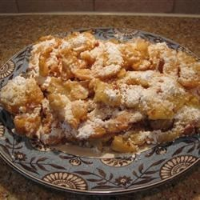

The Recipe and Image used is made by "Tarmia" from "AllRecipes.com." Here is a link to the orinal Recipe and image: Original Recipe
8 cups vegetable oil for frying
1 1/2 cups of milk
2 eggs
2 cups all-purpose flour
1/2 teaspoon groudn cinnamon
1/2 teaspoon salt
3/4 cup confectioner's suger
1) In a deep-fryer, or heavy skillet, heat oil to 375 degrees F (190 degrees C)
2) In a large bowl, beat eggs together. Combine flour, baking powder, cinnamon and salt. Stir into the egg mixture until smooth.
3) While covering the funnel hole with one hand, pour 1 cup of batter. Start from the center in a swirling motion to make a 6 or 7 inch round. Fry on both sides until golden brown. Remove and drain on paper towels. Sprinkle with confectioners'
